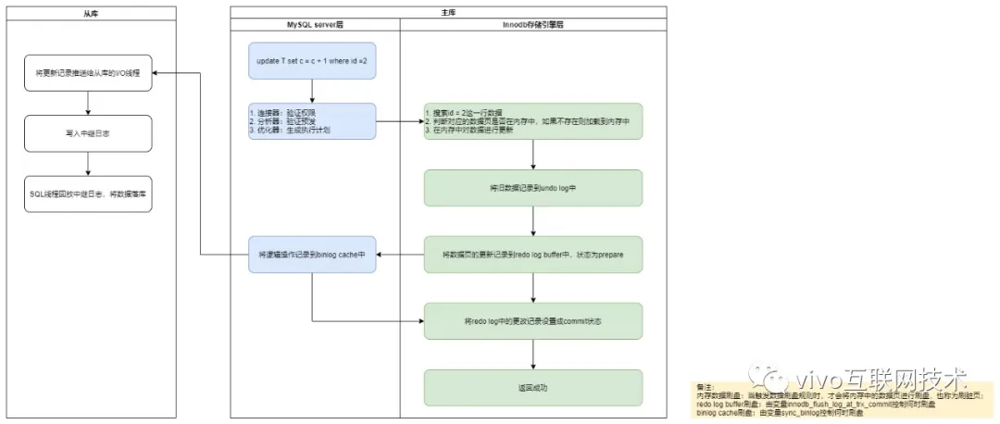
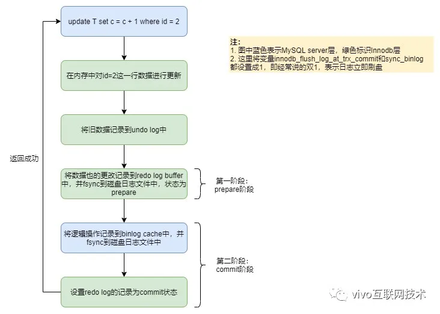
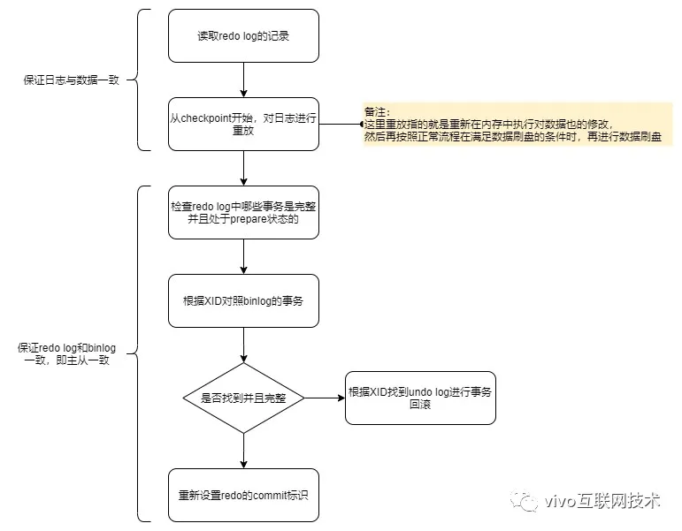

宕机恢复原理 #
1 前言 #
MySQL 保证数据不丢失的能力主要体现在两个方面：
- 能够恢复到任何时间点的状态。
- 对于这一点，只要保留足够的 Binlog，就可以通过重跑 Binlog 来实现。
- 能够保证 MySQL 在任何时间段突然崩溃，重启之后之前提交的记录都不会丢失。
- 对于这一点，也就是本文所说的宕机恢复，即在 InnoDB 存储引擎中，事务提交过程中任何阶段，MySQL 突然崩溃，重启后都能保证事务的完整性，已提交的事务不会丢失，未提交完整的数据会自动进行回滚，这个能力依赖的就是 Redo Log和 Undo Log两个日志。
- 因为宕机恢复主要体现在事务执行过程中突然崩溃，重启后能保证事务的完整性，所以在讲解具体的原理前，先了解一下 MySQL 事务执行有哪些关键阶段，后面才能依据这几个阶段来进行解析，下面以一条更新语句的执行流程为例来进行说明：

- 从内存中找出这条数据记录，对其进行更新。
- 将旧数据记录到 Undo Log 中。
- 将对数据页的更改记录到 Redo Log Buffer 中，状态为
prepare状态。 - 将逻辑操作记录到 Binlog Cache 中。
- 将 Redo Log 中的更改记录设置为
commit状态。对于内存中的数据和日志，都是由后台线程来进行处理，当触发到落盘规则后再异步进行刷盘。
2 WAL 技术 #
- MySQL更改数据的时候，不是直接写磁盘文件中的数据，因为直接写磁盘文件是随机写，开销大性能低，没办法满足 MySQL 的性能要求，因此会设计成先在内存中对数据进行更改，再异步落盘。
- 但是内存总是不可靠，万一断电重启，还没来得及落盘的内存数据就会丢失，所以还需要加上写日志这个步骤，万一断电重启，还能通过日志中的记录进行恢复。
- 写日志虽然也是写磁盘，但是他是顺序写，相比随机写开销更小，能提升语句的执行性能。
- 这个技术就是大多数存储系统都会用的WAL（Write Ahead Log）技术，也称为日志先行的技术，指的是对数据文件进行修改前，必须将修改先记录日志，这样可以保证数据的一致性和持久性，也能提升语句执行性能。
3 核心日志模块 #
更新 SQL 执行过程中，总共涉及 MySQL 日志模块其中的三个核心日志，分别是 Redo Log（重做日志）、Undo Log（回滚日志）、Binlog（归档日志），下面将会对的三个日志进行一个概要介绍，详细的内容可以参考 1.4 事务日志。
3.1 Redo Log #
- Redo Log 也称为重做日志，由InnoDB 存储引擎层产生，记录的是数据库中每个页的修改，而不是某一行或某几行修改成怎样，可以用来恢复提交后的物理数据页（恢复数据页只能恢复到最后一次提交的位置，因为后面的修改恢复改之前的）。
- 前面提到的[WAL 技术](#2-WAL 技术)，Redo Log 就是 WAL 的典型应用，MySQL 在有事务提交对数据进行更改时，只会在内存中修改对应的数据页和 Redo Log 日志，完成后即表示事务提交成功，至于磁盘数据文件的更新，则由后台线程异步处理。
- 由于 Redo Log 的加入，保证了 MySQL 数据一致性和持久性（即使数据刷盘之前 MySQL 崩溃了，重启后仍然能通过 Redo Log 里的更改记录进行重放，重新刷盘），此外，还能提升语句的执行性能（写 Redo Log 是顺序写，相比于更新数据文件的随机写，日志的写入开销更小，能显著提升语句的执行性能，提高并发量），由此可见 Redo Log 是必不可少的。
- Redo Log 是固定大小的，所以只能循环写，从头开始写，写到末尾就又回到开头，相当于一个环形，当日志写满了，就需要对旧的记录进行擦除，但在擦除之前，需要确保这些要被擦除记录对应在内存中的数据页都已经刷到磁盘了，在 Redo Log 满了到擦除旧记录腾出新空间这段时间，是不能再接收新的更新请求，所以有可能会导致 MySQL 卡顿，所以针对并发量大的系统，适当设置 Redo Log 的文件大小非常重要。
3.2 Undo Log #
- Undo Log 主要提供了回滚 和** 多行版本控制**（MVCC，保证事务的原子性）两个作用。
- 在数据修改的流程中，会记录一条与当前操作相反的逻辑日志到 Undo Log 中（可以认为当
delete一条记录时，Undo Log 中会记录一条对应的insert记录，反之亦然，当update一条记录时，他记录一条对应相反的update记录），如果因为某些原因导致事务异常失败了，可以借助该 Undo Log 进行回滚，保证事务的完整性，所以 Undo Log 也必不可少。
3.3 Binlog #
- Binlog在 MySQL 的 Server 层产生，不属于任何引擎，主要记录用户对数据库操作的 SQL 语句（除了查询语句）。
- 之所以将 Binlog 称为归档日志，是因为Binlog 不会像 Redo Log 一样擦掉之前的记录循环写，而是一直记录，等到超过有效期才会被清理，如果超过单日志的最大值（默认 1G，可以通过变量
mac_binlog_size设置），则会新起一个文件继续记录，但由于日志可能是基于事务来记录的（如 InnoDB 表类型），而事务是绝不可能也不应该跨文件记录的，如果正好 Binlog 日志文件达到了最大值但事务还没有提交，则不会切换新的文件记录，而是继续增大日志，所以max_binlog_size指定的值和实际的 Binlog 日志大小不一定相等。 - 正是由于Binlog 有归档的作用，所以 Binlog主要用于主从同步和数据库基于时间点的还原。
- Binlog 是否可以简化掉，需要分场景来看：
- 如果是主从模式，Binlog 是必须的，因为从库的数据同步依赖的就是 Binlog。
- 如果是单机模式，并且不考虑数据库基于时间点的还原，Binlog 就不是必须的，因为有 Redo Log 就可以保证宕机恢复的能力了，但是万一需要回滚到某个时间点的状态，这个时候就无能为力了，所以建议 Binlog 还是一直开启。
4 两阶段提交 #
- 从上面可以看出，因为Redo Log 影响主库的数据，Binlog 影响从库的数据，所以Redo Log 和 Binlog 必须保持一致才能保证主从数据一致，这是前提。
- 这里的 Redo Log 和 Binlog 其实就是很典型的分布式事务场景，因为两者本身就是两个独立的个体，要想保持一致，就必须使用分布式事务的解决方案来处理，而将 Redo Log 分成了两步，其实就是使用了两阶段提交协议（Two-phase Commit，2PC）。
- 下面对更新语句的执行流程进行简化，看一下 MySQL 的两阶段提交是如何实现的：

- 从图中可以看出，事务的提交有两个阶段，就是将 Redo Log 的写入拆成了两个步骤：
prepare和commit，中间再穿插写入 Binlog。 - 有时候我们也很疑惑，为什么一定要用两阶段提交呢，如果不用两阶段提交会出现什么情况，比如先写 Redo Log，再写 Binlog，或者先写 Binlog，再写 Redo Log 不行吗，下面我们用反证法来进行论证，我们继续用
update T set c = c + 1 where id = 2这个例子，假设id = 2这一条数据的c初始值为 0：-
假如在Redo Log 写完，Binlog 还没有写完的时候，MySQL 进程异常重启，由于 Redo Log 已经写完了，系统重启会通过 Redo Log 将数据恢复回来，所以恢复后这一行
c的值是 1，但是由于 Binlog 没写完就crash了，这时候Binlog 里面就没有记录这个语句，因此，不管是现在的从库还是之后通过这份 Binlog 还原临时库都没有这一次更新，c的值还是 0，与原库不同，这就造成了主从不一致。 -
同理，如果先写 Binlog，再写 Redo Log，中途系统
crash了，也会导致主从不一致，这里就不再详述了。 -
所以将 Redo Log 分成两步写，即两阶段提交，才能保证 Redo Log 和 Binlog 内容一致，从而保证主从数据一致。
-
两阶段提交虽然能保证但事务两个日志的内容一致，但在多事务的情况下，却不能保证两者的提交顺序一致，比如下面这个例子，假设现在有 3 个事务同时提交：
T1 (--prepare--binlog---------------------commit) T2 (-----prepare-----binlog----commit) T3 (--------prepare-------binlog------commit)此时各个阶段写入的顺序如下：
- Redo Log Prepare 的顺序： T1 –》T2 –》T3。
- Binlog 的写入顺序： T1 –》T2 –》T3。
- Redo Log Commit 的顺序： T2 –》T3 –> T1。
由于 Binlog 写入的顺序和 Redo Log 提交结束的顺序不一致，导致 Binlog 和 Redo Log 所记录的事务提交结束的顺序不一样，最终导致的结果就是主从数据不一致。
-
因此，在两阶段提交的流程基础上，还需要加一个锁来保证提交的原子性，从而保证多事务的情况下，两个日志的提交顺序一致：
- 在早期的 MySQL 版本中，通过使用
prepare_commit_mutex锁来保证事务提交的顺序。 - 在一个事务获取到锁时才能进入
prepare，一直到commit结束才能释放锁，下个事务才可以继续进行prepare操作。 - 加锁虽然完美地解决了顺序一致性的问题，但是又会导致另外两个新的问题：
- 在并发量较大的时候，会导致对锁的争用，性能不佳。
- 每个事务提交都会进行两次
fsync（写磁盘），一次是 Redo Log 落盘，另一次是 Binlog 落盘，而写磁盘是很昂贵的操作，对于普通磁盘，每秒的 QPS 大概也就是几百。
- 在早期的 MySQL 版本中，通过使用
-
- 从图中可以看出，事务的提交有两个阶段，就是将 Redo Log 的写入拆成了两个步骤：
5 组提交 #
- 针对通过在两阶段提交中加锁控制事务提交顺序这种实现方式遇到的性能瓶颈问题可以通过组提交的方式来解决。
- 在 MySQL 5.6 就引入了Binlog 组提交，即BLGC（Binary Log Group Commit）。
- Binlog 组提交的基本思想是引入队列机制保证 InnoDB 事务提交顺序与 Binlog 落盘顺序一致，并将事务分组，组内的 Binlog 刷盘动作交给一个事务进行，实现组提交目的，具体如下图所示：

- 第一阶段（
prepare阶段）：- 持有
prepare_commit_mutex，然后Redo Log 到磁盘，设置为prepare状态 ，完成后就释放prepare_commit_mutex，Binlog 不作任何操作 。
- 持有
- 第二阶段（
commit阶段），这里拆分成了三步，每一步的任务分配给一个专门的线程处理：- Flush Stage（写入 Binlog 缓存）：
- 持有
lock_log_mutex（leader 持有，follower 等待）。 - 获取队列中的一组Binlog（队列中的所有事务）。
- 写入Binlog缓存。
- 持有
- Sync Stage（将Binlog落盘）：
- 释放
lock_log_mutex，持有lock_sync_mutex（leader持有，follower等待）。 - 将一组Binlog落盘（
fsync动作，最耗时，假设sync_binlog为1）。
- 释放
- Commit Stage（InnoDB Commit，清除Undo信息）：
- 释放
lock_sync_mutex，持有lock_commit_mutex（leader持有，follower等待）。 - 遍历队列中的事务，逐一进行InnoDB Commit。
- 释放
lock_commit_mutex。
- 释放
- Flush Stage（写入 Binlog 缓存）：
- 第一阶段（
- 每个Stage都有自己的队列，队列中的第一个事务称为leader，其他事务称为follower，leader控制着follower的行为。
- 每个队列各自有
mutex保护，队列之间是顺序的，只有flush完成后，才能进入到sync阶段的队列中，sync完成后，才能进入到commit阶段的队列中，但是这三个阶段的作业是可以同时并发执行的，即当一组事务在进行commit阶段时，其他新事务可以进行flush阶段，实现真正意义上的组提交，大幅度降低磁盘的IOPS消耗。 - 组提交虽然在每个队列中仍然保留了
prepare_commit_mutex锁，但是锁的粒度变小了，变成了原来两阶段提交的$\frac14$，所以锁的争用性也会大大降低，另外，组提交是批量刷盘，相比之前的单条记录刷盘，大幅度降低了磁盘的IO消耗，因此组提交比两阶段提交加锁性能更好。
6 数据恢复流程 #
6.1 整体流程 #
MySQL重启后，恢复数据的流程如下图所示：

- 首先会检查Redo Log中是完整并且处于
prepare状态的事务。 - 然后根据XID（事务ID）从Binlog中找到对应事务：
- 如果找不到，则根据Undo Log进行回滚。
- 如果找到并且事务完整，则重新设置Redo Log的
commit标识，完成事务的提交。
6.2 各阶段MySQL崩溃的恢复策略 #
- 时刻A（刚在内存中更改完数据页，还没有开始写Redo Log的时候崩溃）：
- 因为内存中的脏页还没刷盘，也没有写Redo Log和Binlog，即这个事务还没有开始提交，所以崩溃恢复跟该事务没有关系。
- 时刻B（正在写Redo Log，或者已经写完Redo Log并且落盘后，处于
prepare状态，还没有开始写Binlog的时候崩溃）：- 恢复后判断Redo Log的事务是不是完整的：
- 如果不是，则根据Undo Log回滚。
- 如果是完整的，并且是
prepare状态，则进一步判断对应事务的Binlog是不是完整的：- 如果不是，则根据Undo Log回滚。
- 如果是完整的，则重新设置Redo Log的
commit标识，完成事务的提交。
- 恢复后判断Redo Log的事务是不是完整的：
- 时刻C（正在写Binlog，或者已经写完Binlog并且落盘了，还没有开始
commitRedo Log的时候崩溃）：- 恢复后跟时刻B一样，按照时刻B的处理方式进行处理即可。
- 时刻D（正在
commitRedo Log或者事务已经提交完的时候，还没有反馈成功给客户端的时候崩溃）：- 恢复后跟时刻C基本一样，都会对照Redo Log和Binlog的事务完整性，来确认是回滚还是重新提交。